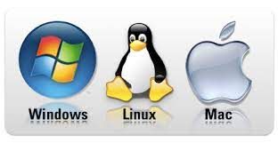
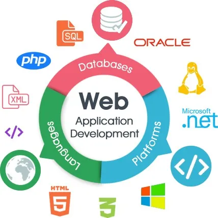
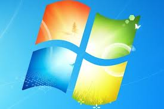

O que é um software?
Um software é um serviço computacional utilizado para realizar ações nos sistemas de computadores. Ou seja: Um software é todo programa presente nos diversos dispositivos (computadores, celulares, televisores, entre outros
Exemplos de Software: Chrome, calculadora, Windows Media Player, Microsoft Word, AutoCAD, Adobe Photoshop.

O que é Sistema Operacional?
O sistema operacional é um software, ou um conjunto de softwares, que tem como papel gerenciar e administrar todos os recursos presentes em um sistema.
Exemplos de Sistema Operacional: Um sistema operacional é fundamentalmente um software, pode ser o Linux, Windows, Android, macOS, UNIX..

O que é Software de Programação?
Softwares de programação são softwares que permitem que programadores criem outros programas, através do uso de linguagens de programação..
Exemplos de Softwares de Programação: Word, Exel, Paint, Bloco de notas, calculadora ,SOFTWARE DE PROGRAMAÇÃO: são softwares usados para criar outros programas, a parir de uma linguagem de programação, como Java, PHP, Pascal, C+, C++, .
o que é um software de sistema?
O software de sistema é um conjunto de informações processadas pelo sistema interno de um dispositivo que permite a interação entre usuário e o hardware.
Exemplos de sistemas:windows,android,ios.
O que é Software de aplicação?
um software de aplicação tem como função executar tarefas das mais diversas, que podem ser de uso individual ou até mesmo global, o que pede que eles sejam mais robustos e seguros...
Exemplos de Softwares Aplicação:Microsoft Word, Spotify, Calculadora, Instagram, TikTok..
O que é Software livre?
É qualquer programa que pode ser copiado, usado, modificado e redistribuído de acordo com as necessidades de cada usuário.
Exemplos de Softwares Livre:sistema operacional Linux linguagens Java e PHP; banco de dados MySQL; programa de escritório LibreOffice (alternativa gratuita do pacote Office da Microsoft); e-mail gratuito Thunderbird. .

O que é Software de Web ou Web App?
É um software que você usa pela Internet com um navegador web.
Exemplos:Twitter. Apesar de poder encontrar o app do twitter nas lojas de aplicativos, a rede social pode ser facilmente acessada pelo navegador do seu dispositivo. ... Pinterest. O Pinterest é uma rede social de compartilhamento de imagens. ... YouTube.
O que é Software de Inteligência Artificial?
Os softwares de inteligência artificial, ou software IA, imitam o comportamento humano e os padrões de aprendizado.
Exemplos de Softwares de inteligência artificial:m assistentes de voz como Alexa e Siri, algoritmos de redes sociais, ferramentas de reconhecimento facial como Face ID, entre outros.
O que é windows?
Windows:O Windows é um sistema operacional de interface gráfica multitarefa. Isso significa que podemos trabalhar com vários programas simultaneamente.
O que é windows 1.0 ?
Windows 1.0: foi uma interface gráfica de usuário entre o sistema operacional Microsoft DOS e o computador, é a primeiro versão da família Windows desenvolvido pela empresa norte-americana Microsoft. Inicialmente, este não era um sistema operacional próprio, era apenas uma interface no modo gráfico que com o auxílio do dispositivo mouse facilitava o uso do computador com sistema MS-DOS, com funcionalidades relativamente limitadas.
Exemplos de windows 1.0:Vinha com apps como o Paint, calculadora, agenda, editor de texto (o Write) um jogo simples, o Reversi.

O que é windows 2.0 ?
Windows 2.0: foi lançado em 1 de novembro de 1987 e praticamente tem a mesma interface do Windows 1.0x, com a diferença de apresentar mais recursos, ferramentas e maior paleta de cores, embora os computadores daquela época fossem ainda muito lentos quando estes utilizavam uma interface gráfica de boa qualidade. Permite a sobreposição de janelas e estas podem maximizar e minimizar..
Exemplos de windows 2.0:O Windows 2.0 praticamente possui a mesma interface do Windows 1.0, com a diferença de ter mais recursos, ferramentas e cores.

O que é windows 3.0 ?
Windows 3.0:Era usado em computadores 286 e 386. A versão 3.0 foi o primeiro sucesso amplo do Windows. Ao contrário das versões anteriores, ele era uma versão completamente nova, porém era um Ambiente Gráfico que rodava sobre o sistema MS-DOS..
Exemplos windows 3.0:O Windows é um sistema operacional de interface gráfica multitarefa. Isso significa que podemos trabalhar com vários programas simultaneamente.
O que é windows 4.0 ?
Windows 4.0:é a quarta versão do sistema operacional Microsoft Windows NT, lançado em 1996. É um sistema Windows de 32 bits disponível para estações de trabalho e servidores com interface gráfica semelhante ao Windows 95..
Exemplos windows 4.0:O Windows é um sistema operacional de interface gráfica multitarefa. Isso significa que podemos trabalhar com vários programas simultaneamente

O que é windows 5.0 ?
Windows 5.0:O Windows CE 5.0 (codinome "Macallan")[1] é o sucessor do Windows CE 4.2, é a terceira versão da família Windows CE NET. Foi lançado em 9 de julho de 2004. Como seus antecessores o Windows CE 5.0 é comercializado para o mercado de dispositivos embarcados e vendedores independentes de dispositivos. Windows CE 5.0 foi anunciado como baixo custo, compacto, rápido-to-market, em tempo real do sistema operacional disponível para x86, ARM, MIPS, e SuperH microprocessador baseado em sistemas..
Exemplos windows 4.0:. Na plataforma x86, o Windows CE 5.0 compete contra outros embutidos em Sistemas operacionais da Microsoft, o Windows XP Embedded e seu antecessor, o Windows NT Embedded .

O que é windows 6.0 ?
Windows 6.0:Também conhecido como Windows NT 6.0 e pelo nome de código Longhorn, o Windows Vista tem seis versões, uma delas simplificada e destinada aos países em desenvolvimento. Foi lançado em novembro de 2006 e suas vendas ao público começaram em 30 de Janeiro de 2007.
Exemplos windows 6.0:Também trouxe diversas ferramentas integradas para segurança, como o Windows Defender e o Windows Firewall (presente a partir do Windows XP Service Pack 2). Além disso, é nativamente preparado para a alta definição.

O que é windows 7.0 ?
Windows 7.0: este é o sucessor do Windows Vista que inclui uma série de novos recursos e melhorias. Teve sua versão Beta lançada em Janeiro de 2009 para todos aqueles que se interessassem por testá-lo (conhecidos como Beta-Testers), sendo distribuído gratuitamente pela Microsoft em seu site (versão em inglês). Na versão Beta já se pode perceber pequenas mudanças, como maior integração a processador de Múltiplos Núcleos e inicialização mais rápida.
Exemplos windows 7.0: Também nota-se melhoria no reconhecimento de voz em relação ao Windows Vista. Na versão Ultimate é possível receber como Atualização Opcional outro idioma para o Windows como um todo
O que é windows 8.0 ?
Windows 8.0:Lançado em 2012, Windows 8 é um sistema operacional da Microsoft para computadores pessoais, portáteis (lê-se Notebooks), netbooks e tablets. É o sucessor do Windows 7. Foi anunciado oficialmente por Steve Ballmer, diretor executivo da Microsoft, durante a conferência de pré-lançamento do sistema operacional. Segundo a empresa, este sistema operacional será um sistema para qualquer dispositivo, com uma interface totalmente nova, adaptada para dispositivos sensíveis ao toque.
Exemplos windows 8.0:Além disso, apresentam os recursos de segurança e confiabilidade que você espera do Windows. Eles são rápidos e foram desenvolvidos para funcionar em diferentes dispositivos, especialmente naqueles da nova geração de dispositivos de toque.

O que é windows 10 ?
Windows 10:Windows 10 foi lançado pela Microsoft em 29 de Julho de 2015, e todos os usuários do Windows Phone 8.1, Windows 7, 8 e 8.1 terão a atualização para o novo sistema gratuitamente. Entre as principais novidades do novo sistema operacional estão: A volta do Menu Iniciar Assistente pessoal Cortana Integração com tablets e smartphones (Windows 10 Mobile) e Xbox One O sucessor (mas não substituto definitivo) do Internet Explorer, o Microsoft Edge Volta do Aero Glass (melhorado), do Windows 7 Aplicativos universais (adaptáveis em PC's, notebooks, tablets e smartphones) Novos aplicativos do Windows: Fotos, Vídeos, Música, Loja
Exemplos windows 10:Este sistema é considerado por muitos usuários o melhor Windows da história, por suas drásticas mudanças com base na opinião de seus usuários (através do programa Windows Insider).

O que é windows 11?
Windows 11:O Windows 11 foi lançado pela Microsoft em 24 de Junho de 2021 e todos os usuários do Windows 10 terão atualização gratuita para o novo sistema. A atualização gratuita entrou em teste público na semana seguinte ao lançamento, e será distribuída para todos entre o final de 2021 e o começo de 2022.
Exemplos windows 11:ntre as principais características do Windows 11, podem ser destacados o "Menu Iniciar" centralizado, um novo modo de gerenciar janelas, ícones remodelados, widgets no desktop, wallpapers para modos claro e escuro e uma maior conectividade com o Xbox.

Linux Mint
Linux Mint é uma distribuição Linux criada a partir de uma comunidade baseada no Ubuntu. É amada por pessoas usuárias casuais e profissionais na área da tecnologia. Mesmo abandonado o suporte a versão 20 do Snap, o Mint ainda é bem popular.

Linux Ubuntu
Desenvolvido por uma empresa chamada Canonical, o Ubuntu é baseado em um dos muitos derivados do Linux Debian. Esse software chegou ao mercado em 2004. As pessoas programadoras na época perceberam os destaques do sistema e sua facilidade na programação. A interface de linha de comando permitia que fosse usada uma sintaxe mínima para escrever programas. O Ubuntu tem três versões, todas desenvolvidas para diferentes propósitos.

Linux Deepin
Deepin é uma distribuição baseada em Debian (era baseada em Ubuntu até a versão 15 lançada no final de 2015) que tem como objetivo fornecer uma interface elegante, confiável e amigável.

Linux Kali
Linux Kali
Offensive Security é a empresa responsável pelo Kali Linux. Ele por si só é uma distro Linux baseada em Debian. Foi projetado para ajudar principalmente profissionais da área de segurança com seus inúmeros teste.

Linux Manjaro
Manjaro Linux é um sistema operacional rápido, amigável e voltado para desktop baseado no Arch Linux.

Linux Kali
Offensive Security é a empresa responsável pelo Kali Linux. Ele por si só é uma distro Linux baseada em Debian. Foi projetado para ajudar principalmente profissionais da área de segurança com seus inúmeros teste.
Linux Debian
Debian é a distribuição mais antiga e mais popular do Linux. Como qualquer outro distro de peso, fornece uma ambientação muito agradável e rápida. Atualmente, sua última versão é a 11, que também é chamada de Bullseye.

Linux Puppy
Puppy Linux é mais uma distribuição Linux. A diferença aqui é que o Puppy é extraordinariamente pequeno, mas cheio de recursos. O Puppy inicializa em um ramdisk e, ao contrário das distribuições de live CD que tem que extrair coisas do CD, ele carrega na RAM. Isso significa que todos os aplicativos começam em um piscar de olhos e respondem à entrada instantaneamente.

Linux OpenSUSE
O OpenSUSE é mais uma das distribuições Linux que tem como objetivo fornecer uma interface moderna e rápida para pessoas usuárias de desktop e desenvolvedoras de todo mundo.

Linux Lite
Linux Lite é uma distribuição Linux amigável para iniciantes baseada no lançamento de suporte de longo prazo (LTS) do Ubuntu e utilizando o desktop XFCE.

Linux MX
MX Linux é uma distribuição Linux feita para desktop baseada na branch “Stable” do Debian e é um empreendimento cooperativo entre o antiX e as antigas comunidades MEPIS Linux.

Linux CentOS
O Linux CentOS é mais um sistema operacional gratuito que tem como objetivo criar um ecossistema de código aberto confiável. Ele é baseado no RHEL, e é uma das alternativas do Red Hat Enterprise Linux por ser gratuito.

Linux Arch
Arch Linux é a distribuição que foi projetada para pessoas usuárias avançadas ou especialistas em Linux. Sendo possível configurar e personalizar o sistema da maneira que a pessoa usuária quiser. Podemos dizer também que o Arch é voltado para pessoas que gostam de ter controle sobre o seu sistema operacional.

Linux Zorin OS
Zorin OS é uma distribuição Linux baseada no Ubuntu projetada especialmente para iniciantes no Linux. Possui uma interface gráfica de usuário semelhante ao Windows e muitos programas semelhantes aos encontrados no Windows.

Linux Slackware
O lançamento oficial do Slackware Linux foi feito por Patrick Volkerding e é um sistema operacional Linux avançado. Foi projetado com o objetivo de ser um sistema fácil de usar e é principalmente estável.

Linux Oracle
O Oracle Linux é uma distribuição Linux para a classe empresarial e é suportada pela Oracle que a constrói a partir dos pacotes do Red Hat Enterprise Linux (RHEL).

Linux Elementary OS
Elementary OS é uma distribuição de desktop baseada no Ubuntu,Alguns de seus recursos mais interessantes incluem um ambiente de área de trabalho personalizado chamado Pantheon e muitos aplicativos personalizados, incluindo fotos, músicas, vídeos, calendário, terminal, arquivos e muito mais. Ele também vem com alguns aplicativos familiares como o navegador Epiphany e um fork do Geary Mail.

Linux Fedora
Fedora dentre as distribuições linux é a que mais se destaca por ser realmente simples e prover uma grande quantidade de aplicativos previamente instalados. Isso a torna uma distribuição muito amigável e que facilita a entrada de novas pessoas usuárias.

Linux Tails
The Amnesic Incognito Live System (Tails) é uma distro baseada em Debian com o objetivo de fornecer anonimato completo na Internet, sistema vem com várias aplicações de Internet, incluindo um navegador web, cliente IRC, cliente de e-mail e mensageiro instantâneo, todas pré-configuradas com a segurança em mente e com todo o tráfego anonimizado. Para conseguir isso, o Incognito usa a rede Tor para dificultar o rastreamento do tráfego da Internet.

Linux Raspbian
Raspberry Pi OS (anteriormente Raspbian) é um sistema operacional gratuito baseado no Debian e otimizado para o hardware do Raspberry Pi (a arquitetura do processador ARMHF),Nesse sistema, temos um pouco mais de 35.000 pacotes pré-compilados em um formato agradável para fácil instalação em um Raspberry Pi.

Linux Pop!_OS
Pop! _OS é uma distribuição Linux baseada no Ubuntu que utiliza o GNOME como sua área de trabalho personalizada, Pop! _OS é projetado para não ter nenhum item na área de trabalho, a fim de permitir que a pessoa usuária se concentre no trabalho. A distribuição é desenvolvida pelo varejista de computadores Linux System76.